Unidad 02 · Clase 1
¿Qué es una Imagen?
Prof. Eduardo Sierra · Universidad de La Guajira
Desliza o pulsa → para continuar
Vamos a construir esto en el mismo orden en que ocurre en la realidad: primero se captura la luz, después esa luz significa algo, y al final se vuelve a mostrar.
- 01Acto 1 — CapturaCómo una cámara convierte luz en una matriz de números (todavía sin color)
- 02Acto 2 — SignificadoQué son esos números: RGB y RGBA
- 03Acto 3 — PantallaCómo esa matriz vuelve a convertirse en luz que puedes ver
Nuestra imagen de ejemplo
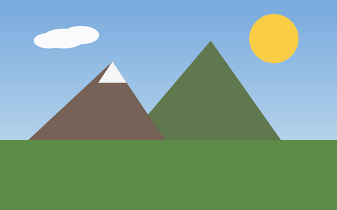
Vamos a usar esta misma imagen durante toda la clase — y a partir de la próxima diapositiva, vamos a olvidarnos de que tiene color.
MATRIZ.
Antes del color: para una computadora, una imagen es ante todo una matriz de números.
Cada punto tiene una posición
El origen (0,0) está arriba a la izquierda, x crece hacia la derecha, y crece hacia abajo — la convención que usan las cámaras y OpenCV.
La luz que entra a una cámara es continua. La cámara la muestrea: la mide en una grilla de puntos.
Lo que hay detrás de una zona "uniforme"
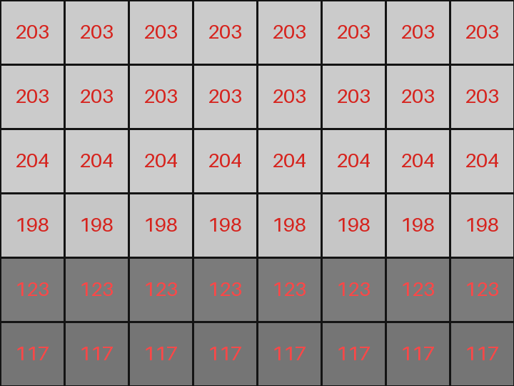
A simple vista parecía una zona plana. En realidad son números que cambian de fila en fila.
PÍXEL.
"Picture element" — una posición (x, y) y un valor: la intensidad de la luz ahí.
¿Cuántos niveles de gris?
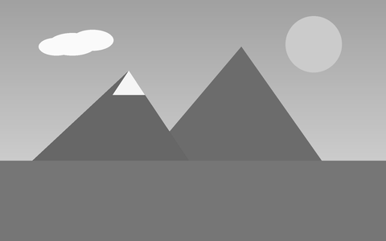
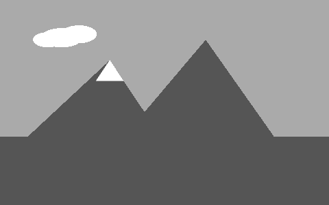
Menos niveles = menos memoria, pero aparecen bandas. Casi todo usa 8 bits por canal.
¿Cuántos píxeles?
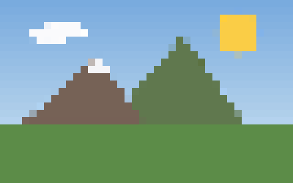
Con menos puntos de muestreo, cada cuadrito visible es un solo píxel agrandado — de ahí "pixelado".
En números
Ya sabemos cómo se ve UN número por píxel. La última fila de esta tabla es una pista: en color, cada píxel trae tres. ¿De dónde salen?
De dónde salen esos tres números
- 01FotositoCada punto del sensor mide solo intensidad de luz — no distingue color
- 02Filtro de BayerUn mosaico de filtros R/G/B sobre el sensor: cada fotosito ve un solo color
- 03DemosaicingEl software interpola lo que falta y reconstruye los 3 canales en cada píxel
Con esto, el sensor ya nos entrega tres números por punto, no uno solo. Pero, ¿qué significan esos tres números? Eso es lo que sigue.
RGB
Los tres números que entrega el sensor tienen nombre: Red, Green, Blue — cada uno de 0 a 255.
Los tres canales, por separado
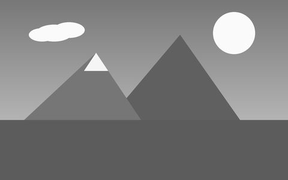
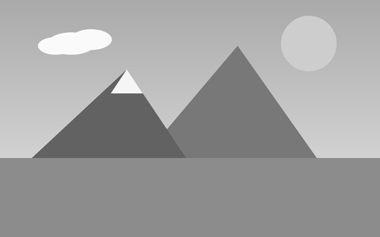
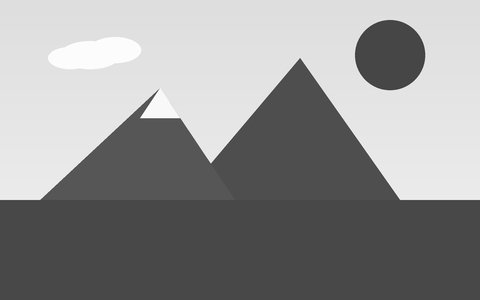
El sol es brillante en R y G, oscuro en B — el amarillo tiene poco azul. El cielo es brillante en B — el azul tiene poco rojo.
Y si ignoramos el color otra vez
Volvemos a un solo número por píxel, de 0 (negro) a 255 (blanco). RGB es solo una capa extra sobre la misma idea del Acto 1.
RGBA
Un cuarto número, opcional: Alpha — no es color, es transparencia.
Alpha en la práctica
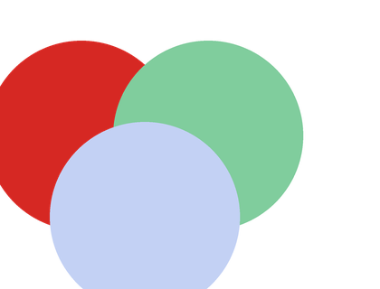
Es el mismo archivo PNG en los tres casos — solo cambia lo que hay detrás. El círculo rojo es opaco (alpha 255), el verde es semitransparente (150), el azul casi no se ve (70).
Alpha también es una matriz de números
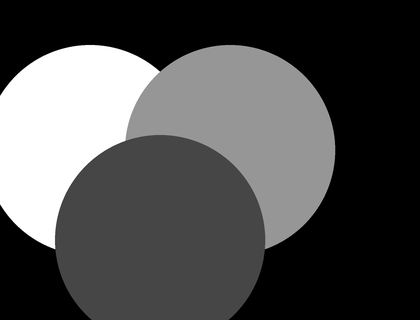
Igual que R, G o B: un valor de 0 a 255 por píxel. Con esto ya sabemos qué SIGNIFICA cada número de la matriz. Falta una pregunta: ¿cómo se convierte eso otra vez en luz que puedas ver?
Una pantalla no guarda colores. Los crea, mezclando luz roja, verde y azul.
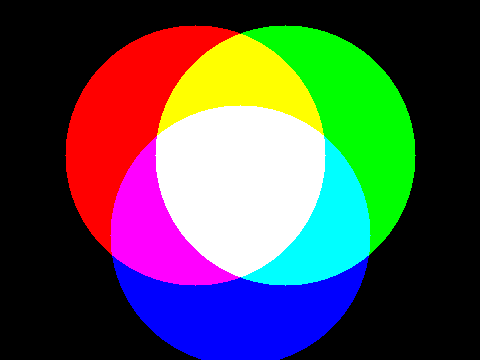
Rojo + Verde = Amarillo · Rojo + Azul = Magenta · Verde + Azul = Cian · Los tres juntos = Blanco. Es luz, no pintura — se suma, no se resta.
Un píxel de pantalla son en realidad tres
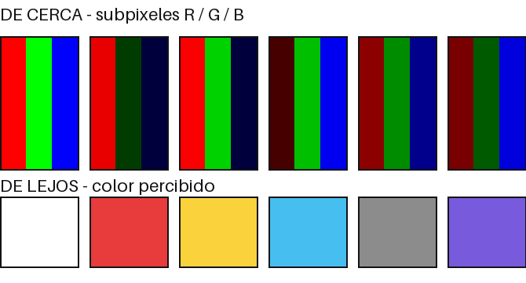
Cada píxel físico de una pantalla tiene tres sub-elementos de luz. Tu ojo, a distancia normal, los mezcla en el color que guardaba la matriz RGB.
Un píxel no tiene un tamaño fijo
El "viewport" es el área visible en una pantalla. Ahí, un píxel es solo una unidad lógica — su tamaño físico real depende del dispositivo.
PPI = píxeles por pulgada. El mismo "1 píxel" es diminuto en tu celular y enorme cuando se proyecta en el tablero — por eso esta clase usa texto e imágenes grandes.
El recorrido de hoy
- 01CapturaLa cámara muestrea y cuantiza la luz en una matriz de números
- 02SignificadoEsos números son RGB — y a veces RGBA, si además hay transparencia
- 03PantallaLa pantalla recrea esa luz con subpíxeles — a un tamaño que depende del dispositivo